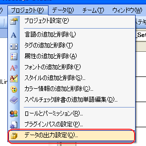
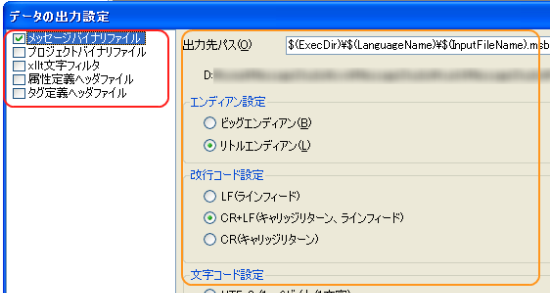

Resource Output Settings
About Output Settings
By setting the data output settings, you can select which builder to use from the possible choices. Also, in these output settings, for each of the builders that that have been selected for a project, it is possible to make minor adjustments. All of the output settings will all be described in the project file (msproj) and share across the entire project. The builder will output the appropriate resource file based on the project file and each content file.
Also, when a project file is created, if it was created using the project wizard all the way though, the settings for outputting a binary message file (*,msbt) will also be created as part of the project.
Settings
In order to change the output settings for resource files, choose "Data Output Settings" from the "Project" menu. You will need permissions to change these. For more information please see Roles and Permissions.

The settings dialog will look like the following.

For starters, the checkboxes on the left side of the dialog are a list of the builders that the current project can use. Those with check marks are the builders that are being used and those without are not. When the user chooses to Build the builders that are in use will process in order and the recourse file will be output.
Though the types of builders can be increased with plugins, be aware that just embedding a plugin will not make it function. Plugins must be turned on in this output screen by adding a checkmark to the left of the entry.
On the right of the dialog, the screen where details for the builders can be set will appear. Below are explanations of the builder settings that come standard.
Message Binary Entry
The message binary file (*.msbt) is the converted version of the text data entered in the message file (*.mstxt) which is most suited for implementation in the game. Below are the kinds of settings that can be applied:
| Output pass | Set the name of the output resource file. You can choose to use a macro to allow some flexibility in changing the output location. Normally, a bin file is created in the directory immediately below the project and below that directories for each of the languages are created and finally it is set up so that files with the same name as the data entry files are output below that. |
| Endian Settings | The output byte order can be set. Please adjust this based on the game system's architecture. Wii Systems are big endian and DS and DSi Systems are little endian machines. If resource output settings are created using the wrong endian settings, an error will occur when the libms attemps to assert and consequent processes will not be activated. |
| Carriage Return Code Settings | It is possible to assign the control code for carriage returns. When utilizing Nintendo Ware for Revolution or TWL System, please use LF (Line Feed). |
| Character Code Settings | You can set the encoding method for text that will be embeded in the resource file. Please set it as something that can be easily read by the game program. Also, UTF 16 and UTF 32 should also be considered in conjunction with the above endian settings. For example, please be aware that selecting UTF 16 and a big endian will result in the output format being UTF16 BE. |
| Embedding the color change tag. | When the color change tag has been embedded in the text, it signifies how the resource file will be output. For more information, please see About Tags. |
| Embedding the text lable support block | The Message Studio can acquire text data based on the character strings set as labels. Hash tables are used by get access to the text data from label character strings. Because this process is used, the game is able to pull text data relatively quickly but if this hash table is embedded, the message binary file (*.msbt) will become bigger that 4KB. It is possible to abbreviate this by using something like a flowchart to assign index numbers to the text. For more information please see Message Binary File Formats. |
Project Binary File
All the settings for an entire project can be output as a Resource File. For example, this includes, file structures and tag settings.
Endian settings and block outputs can also be set. For more information, please see Project Binary Formats.
xllt Character Filter File
The contents of this file are XML format and can filter characters. Depending on the characters entered using the Message Studio, after the filter file is created, if it is used relative to fonts, the number of characters will be optimized and the volume minimized. For more information, please see Font Workflows.
In order for the xllt file to be properly exported, it is necessary for the Style Settings and Font Settings to be properly set. Before outputting, please make sure to confirm this.
If a checkmark is placed next to "Characters to be Exported Consistently" even if characters are not entered in the Message File, corresponding characters can be output to the filter. For example, with the Wii, there are charicatures that player can create and make appear in games called Miis. Users can also assign names to these Miis. If the Mii's name is to appear, regardless of whether the characters are entered in the Message Studio or not, the filter file must include names that can be used for the Mii. Unless this happens, depending on the name created, some of the characters might not appear as the user intended.
Attribute Definitions/Tag Definition Header File
If this type of builder is used, it is possible to auto export a header file that is compatible with C language based on the project settings. By using a header file, it becomes easier to reflect the project settings in the program and it can minimize the overhead of implementation. In using this header file, it can become necessary to rebuild the entire program each time an update is made. If a game is going to be created that will require much updating, in exchange for the header file, please consider using a Project Binary File (*.msbp).
 Introduction
Introduction Language Settings
Language Settings Editing Messages
Editing Messages Shared Binary Format
Shared Binary Format